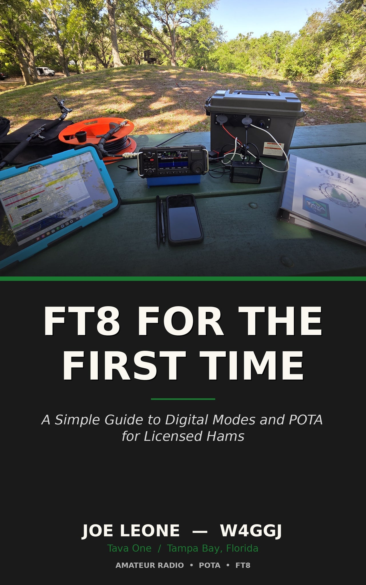

Get on the air
Your first contact is nerve-wracking. An Elmer is on frequency with you, talking you through your first QSO until calling CQ feels like second nature.
An Elmer is the amateur radio tradition of one operator mentoring another. TavaOne Education pairs newcomers with experienced operators, walks you from curiosity to your first contact, and keeps you on the air long after license day.
The term dates to the 1970s — a nod to the patient, experienced operators who quietly help newcomers get started. The radio is easy. Knowing what to do with it is the part a good Elmer makes effortless.
Your first contact is nerve-wracking. An Elmer is on frequency with you, talking you through your first QSO until calling CQ feels like second nature.
Technician, General, or Extra — study with someone who has already walked the path and can explain the why behind every question pool answer.
Antennas, coax, SWR, grounding, digital modes. Skip the weeks of forum-diving — ask the person who has already made the mistakes.
Amateur radio is hands-on STEM you can actually touch — electronics, physics, geography, and digital communication in one hobby. Hosted at Balance Gaming in Pinellas County, the lab opens that world to students, adult learners, veterans, and first responders — with open access for those who'd otherwise never get the chance, the space to learn the theory, and the gear to put it on the air the same day.
Balance Gaming's tabletop gaming area does double duty — plenty of seating and a big 75″ TV make it a ready-made space for STEM sessions, club talks, demos, and exam prep.
The store's gaming streaming room is being fitted with a custom radio desk and dedicated radios — a real station where learners go from lesson to live, on-air contacts.
We prepare students for their license, then refer them to a local club to test — amateur radio license exams are always free.
Structured, partner-backed programs that take learners from first spark to real credentials — starting with Scouting, and growing from there.
We run a complete program to help Scouts earn the BSA Radio merit badge — from the science behind radio to real time on the air — with a registered merit badge counselor on hand to review and sign off. Scouts get on the air under our own dedicated BSA club call sign, sponsored by the Gulf Coast Contest Club (GCCC).
Troops and packs, schools, libraries, veteran groups, and clubs — we'll build a hands-on radio and STEM session tailored to your members.
Start a Program →The Pinellas STEM Radio Lab turns curiosity into capability — teaching real STEM skills and licensing a new generation of amateur radio operators who serve their neighbors when it matters most. We reach students, adult learners, veterans, and first responders across Pinellas County, keeping access open to those who need it. Your sponsorship builds it.
Support goes entirely to the tools we teach with. Exams are free, and license fees are the participant's own — we don't charge for either.
We welcome equipment donors, financial sponsors, grant partners, and volunteer Elmers. Sponsors are recognized on-site at the lab and here on our site.
Tava One is a Pinellas County small business actively pursuing 501(c)(3) status and fiscal-sponsor partnerships to expand grant eligibility and tax-deductible giving.
Become a Sponsor →Self-paced curricula, each paired with an Elmer check-in at every milestone.
From "what's a repeater?" to a passed exam. The fastest path onto the air.
Open up the HF bands and reach across the country — and the world.
Take the radio outdoors. Parks On The Air is the friendliest on-ramp to real operating.
FT8, FT4, JS8 and beyond — make contacts when the bands sound dead.

A Simple Guide to Digital Modes and POTA for Licensed Hams
Your license is in your hand. Now what? FT8 is the most popular digital mode in amateur radio today — five watts into a simple antenna can work the world. This book walks you through every step of getting on the air with digital modes and taking your station into the field for Parks on the Air. No assumptions, no skipped steps, no manuals written for engineers.
Get it on Amazon →Hand-picked references our Elmers point newcomers to again and again.
The official starting point for U.S. amateur licensing.
Free flashcards and practice exams for all three license classes.
The friendliest on-ramp to real operating — activate and hunt parks.
Our companion field-logging PWA — log QSOs, spot, and export with one tap.
The official home of WSJT-X — download, docs, and setup for FT8, FT4, and other weak-signal modes.
Stuck on something specific? Email us — a real operator will reply.